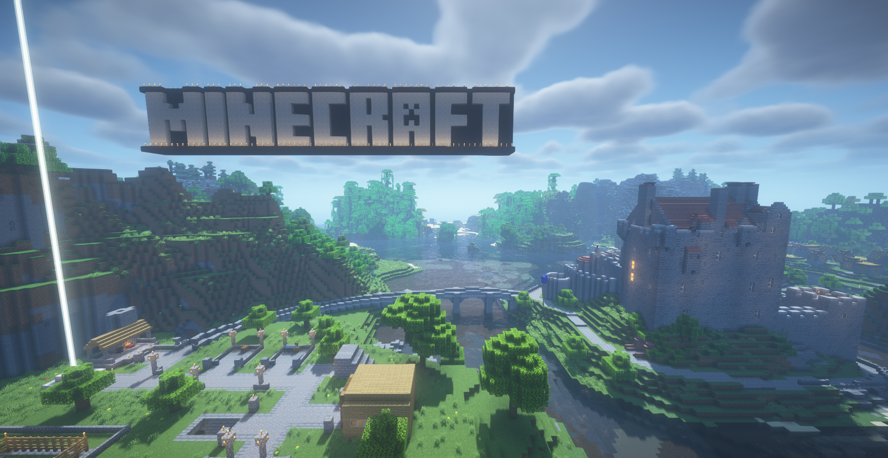

Los primeros años

De kínder a tercer grado en el Santa Cecilia, el bullying y la soledad fueron los compañeros más constantes. Sin amigos reales, el escape fue siempre la pantalla: construir mundos desde cero en Minecraft, correr con Mario en la Wii o perderse en las aventuras de Uncharted. Ese niño tímido e irresponsable encontró en los videojuegos su primer refugio seguro.
Todo cambió en cuarto grado al mudarse al Madre Emilia Simán. El grupo era pequeño, el acoso desapareció y las potras de fútbol en el recreo abrieron la puerta para hacer amigos de verdad por primera vez.
- Colegio inicial
- Santa Cecilia — Kínder a 3.° grado
- Nuevo colegio
- Madre Emilia Simán — desde 4.° grado
- Juegos favoritos
- Minecraft · Mario · Uncharted
- Consolas
- Wii · Nintendo DS · PS vita · PS4
2020 — El año de la abuelita
Cuando el mundo se encerró, los papás salían a trabajar y la casa de los abuelitos se convirtió en el universo entero. La abuelita era el lugar seguro: cocinaba riquísimo, escuchaba horas de relatos sobre lo que se construía en Minecraft y nunca se cansaba de estar presente.
La Wii U, la cancha del parque, los videos de terror nocturnos y el sueño de ser youtuber llenaban días que en retrospectiva brillan como los más tranquilos de la memoria. Era una calma pura — y, a su modo, la infancia más completa que se pudo tener.
2021 — El golpe más duro
A inicios de 2021, un problema en los riñones comenzó a apagar a la abuelita poco a poco. En marzo falleció, y ese fue el golpe más duro que ha tocado vivir — un vacío enorme que duró meses enteros. Verla irse fue la primera vez que el dolor llegó de verdad.
En medio de esa tristeza, encontrar refugio viendo a Conterstine en YouTube fue un alivio inesperado: verlo construir mundos y reír con sus amigos hacía sentir acompañado en los días más silenciosos. Sin saberlo, esos videos devolvieron la risa y enseñaron lo valioso que es sentirse parte de algo.
El anime que cambió todo
Ese mismo año llegó el anime, y con él una forma completamente nueva de ver la vida. Empezó riéndose con KonoSuba, pero el que marcó todo para siempre fue One Piece: Luffy y los Sombrero de Paja enseñaron lealtad, libertad y la convicción de levantarse sin importar cuántas veces se caiga. Poco después llegó Vinland Saga, justo cuando pegaba la vibra del hopecore, y la idea de que "nadie tiene enemigos" tocó muy profundo.
Empezó a dibujar para plasmar ese arte, y tomó una decisión real: no quería amargarse ni llenarse de rencor. Quería ser una persona alegre, abierta y que contagiara buena vibra a los demás.

Champagnat — Donde todo se complicó
Entrar al Champagnat fue un salto al vacío. Al principio, el miedo de ser el más feo del salón y la certeza de que nadie lo haría caso gobernaban todo. Pero la gente recibió con un cariño inesperado, se formaron amistades genuinas y, poco a poco, la confianza fue creciendo bajo la presión de un colegio académicamente muy exigente.
Por finales de septiembre de 2023 apareció Andreita — desde el primer instante, la persona más hermosa del colegio. Conectar con ella y hablar por horas fue algo increíble. Pero la relación tuvo todo en contra: el colegio prohibía parejas, circularon rumores falsos, sus papás no permitían novio y los propios amigos comenzaron a criticar. El problema más grande, sin embargo, fue la inmadurez propia: las inseguridades comían la cabeza, la falta de empatía convirtió el amor en una carga adicional y, en vez de apoyar, se terminó siendo un peso más.
Terminaron a mediados de 2024 y, tras meses de comunicación a medias, en diciembre cortaron por completo. Dolió como nada en el mundo.
La ESEN — Un nuevo comienzo
Ese silencio de diciembre fue el choque que se necesitaba para despertar. Entrar a la ESEN llegó como una señal de que había un nuevo comienzo disponible: comenzó el gimnasio, la sociabilidad creció y hubo un acercamiento más honesto a Dios, entendiendo que todo tiene un propósito.
No todo fue fácil: en el Ciclo 1, la confianza excesiva casi costó la materia de matemáticas. En el Ciclo 2, una relación equivocada —nacida del intento de tapar vacíos y superar a un ex— terminó catorce veces antes de tener la valentía de poner un alto definitivo. Pero cada tropiezo fue maestro. La carrera de Ingeniería en Software, el club de programación competitiva C3, el aprendizaje de nuevos lenguajes y el sueño de crear videojuegos que den a otros la compañía que a mí me salvó: eso es lo que se construye hoy. Más información en Codeforces y LeetCode.
Hoy — 21 de agosto de 2026
En enero de 2026, por cosas de Dios, volvimos a hablar. Una cita, risas, todo lo vivido conversado con total madurez, y una pregunta que esta vez no dude en hacer. Semanas de convencer a mis papás, de demostrar que los estudios son la prioridad y que no se quería a nadie más en la vida que a ella. El 21 de agosto de 2026 formalizaron un noviazgo. Con Andreita no hay que fingir nada — ella da paz, resolvemos todo hablando y me inspira a ser la mejor versión mia cada día.